\dataset: Personalized Figure Caption Generation
With Multimodal Figure Profiles
Abstract
Figure captions are crucial for helping readers understand and remember a figure’s key message. Many models have been developed to generate these captions, helping authors compose better quality captions more easily. Yet, authors almost always need to revise generic AI-generated captions to match their writing style and the domain’s style, highlighting the need for personalization. Despite language models’ personalization (LaMP) advances, these technologies often focus on text-only settings and rarely address scenarios where both inputs and profiles are multimodal. This paper introduces \dataset,111\datasetdataset and code are available on GitHub: https://github.com/Crowd-AI-Lab/lamp-cap. a dataset for personalized figure caption generation with multimodal figure profiles. For each target figure, \datasetprovides not only the needed inputs, such as figure images, but also up to three other figures from the same document—each with its image, caption, and figure-mentioning paragraphs—as a profile to characterize the context. Experiments with four LLMs show that using profile information consistently helps generate captions closer to the original author-written ones. Ablation studies reveal that images in the profile are more helpful than figure-mentioning paragraphs, highlighting the advantage of using multimodal profiles over text-only ones.
: Personalized Figure Caption Generation
With Multimodal Figure Profiles
Ho Yin ‘Sam’ Ng1 Ting-Yao Hsu1 Aashish Anantha Ramakrishnan1 Branislav Kveton2 Nedim Lipka2 Franck Dernoncourt2 Dongwon Lee1 Tong Yu2 Sungchul Kim2 Ryan A. Rossi2 Ting-Hao ‘Kenneth’ Huang1 1Pennsylvania State University 2Adobe Research 1{sam.ng,txh357,aashish,dongwon,txh710}@psu.edu 2{kveton,lipka,dernonco,tyu,sukim,ryrossi}@adobe.com
1 Introduction
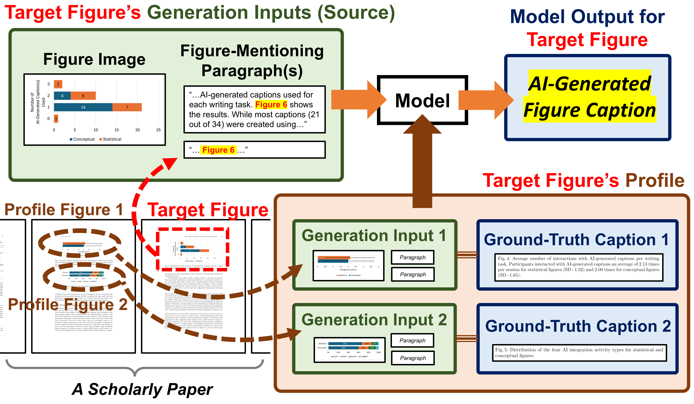
Figures like bar charts or line charts are widely used by scientists, companies, and governments to communicate key insights Kim et al. (2021); Farahani et al. (2023). Captions—text placed next to these figures—are known to be crucial for helping readers understand and remember the figure’s message Tang et al. (2023); Kantharaj et al. (2022a); Meng et al. (2024). Many models have been developed to generate high-quality captions to help authors compose captions more easily Hsu et al. (2021); Huang et al. (2023); Liu et al. (2022); Masry et al. (2023). For example, the SciCap Challenges in 2023 and 2024 invited global teams to generate captions for scientific figures in arXiv papers Hsu et al. (2025); Kim et al. (2025). Systems like SciCapenter also emerged to assist authors by providing AI-generated captions Hsu et al. (2024). Despite these advances, studies show that authors almost always need to revise generic AI-generated captions to match their style and the domain’s style, with one participant noting, “I need to revise the facade because this is not the right way to present (the concept)” Ng et al. (2025a, b). This highlights the need for personalized caption generation.
Meanwhile, the rise of large language models (LLMs) has recently fueled interest in personalized text generation Zhang et al. (2024); Woźniak et al. (2024). Benchmarks like LaMP Salemi et al. (2024) (Language Models Personalization) and LongLaMP Kumar et al. (2024) were created to study how LLMs can tailor text for specific contexts. However, most of these explorations focused on text-only settings, where both the input (used for generation) and profile (used for personalization) were text-based. How these text-only approaches apply to multimodal scenarios—such as figure caption generation—remains unclear.
This paper introduces \dataset, a dataset for personalized figure caption generation with multimodal figure profiles (§3). \datasetincludes 110,828 target figures—scientific figures for which models aim to generate captions for—each from a distinct arXiv paper. For each target figure, \datasetprovides the needed inputs (source)—figure images and figure-mentioning paragraphs (e.g., “Figure 3 shows…”)—along with up to three other figures from the same paper, each with its image, caption, and figure-mentioning paragraphs, as a profile to capture context. Models are then tasked with generating captions for the target figure using its image and figure-mentioning paragraphs (multimodal source), given a figure profile of source-caption pairs from the same paper (multimodal profile for personalization). We used \datasetto test caption generation with four LLMs and found that profile information consistently improved the similarity of generated captions to ground-truth captions (§4). Ablation studies revealed that captions are the most critical profile element, followed by images, with figure-mentioning paragraphs being the least important (§4.1). Our work provides a new benchmark for personalized text generation and demonstrates the effectiveness of using multimodal profiles beyond text-only approaches.
2 Related Work
Figure Caption Generation.
Figure caption generation requires models to understand both the visual content and the broader context Kantharaj et al. (2022b); Wang et al. (2024); Hu et al. (2024); Obeid and Hoque (2020). Early approaches, like FigCAP and the initial version of SciCap, relied solely on figure images as input Chen et al. (2020); Hsu et al. (2021). Researchers soon realized this was insufficient and began incorporating additional context, such as figure-mentioning paragraphs and even the document’s title or abstract Huang et al. (2023); Yang et al. (2024); Stokes et al. (2022). Despite this progress, prior work often overlooked personalization. Although studies noted that users often need captions tailored to their style or domain Hsu et al. (2025); Huang et al. (2023), none of these approaches explicitly provided source-target pairs that capture the specific generation context needed for models to learn personalized styles. A few studies have explored creative personalization of image captions Shuster et al. (2019); Anantha Ramakrishnan et al. (2025), but these approaches relied on explicit style inputs, making them dependent on user-provided style descriptions.
Personalized LLMs.
Personalization of LLMs has gained attention, primarily in two directions Zhang et al. (2024): (i) personalized text generation, which adapts generated text to specific contexts, and (ii) downstream task personalization, which enhances targeted applications like recommendation systems. Our work focuses on the first direction. Most prior work in this space has been centered on text-only settings (§1). For example, LaMP included tasks such as news headline generation and email subject creation—relying exclusively on text-based inputs and profiles Salemi et al. (2024). How these approaches extend to multimodal scenarios remains an open question.
3 \datasetDataset
Data Source and Curation Process.
We curated the SciCap Challenge Dataset to construct \dataset Hsu et al. (2025). SciCap Challenge Dataset included 476,389 figures, each with figure images, captions, and figure-mentioning paragraphs, extracted from 231,675 arXiv papers. To create \dataset, we focused on papers with at least two figures. For each eligible paper, we randomly selected one figure as the target figure, which the model must generate a caption for. The remaining figure(s) from the same paper served as the profile, providing context for personalized caption generation. Because the SciCap Challenge Dataset limited each arXiv paper to a maximum of four figures to reduce data size and support participation from smaller labs with limited computing resources, each target figure in \datasetcan have at most three profile figures.
Dataset Statistics.
Following the SciCap Challenge Dataset’s split (i.e., 80/10/10 training/validation/test), \datasetincludes 110,828 target figures: 86,197 for training, 12,361 for validation, and 12,270 for testing. Among these, 54,680 (49.3%) had one profile figure, 26,193 (23.6%) had two, and 30,027 (27.1%) had three, totaling 197,075 profile figures. Papers with only one figure were excluded, as at least two figures are required to form target-profile pairs. Detailed data splits by figure type and profile count are in Appendix A.
4 Experimental Results
| LLM | Profile | BLEU | ROUGE | |||||||
|---|---|---|---|---|---|---|---|---|---|---|
| Used | B-1 | B-2 | B-3 | B-4 | R-1 | R-2 | R-L | |||
| GPT-4o | No | .219 | .133 | .091 | .063 | .321 | .127 | .248 | ||
| One | .279 | .186 | .137 | .103 | .384 | .178 | .313 | |||
| All | .292 | .200 | .150 | .115 | .397 | .194 | .328 | |||
| Llama-4 Scout | No | .254 | .178 | .138 | .112 | .357 | .182 | .293 | ||
| One | .372 | .293 | .246 | .211 | .481 | .300 | .423 | |||
| All | .396 | .318 | .270 | .235 | .503 | .324 | .447 | |||
|
No | .305 | .230 | .188 | .160 | .417 | .237 | .361 | ||
| One | .370 | .291 | .244 | .209 | .482 | .301 | .426 | |||
| All | .395 | .317 | .270 | .234 | .504 | .328 | .449 | |||
| GPT-4.1 Mini | No | .209 | .124 | .081 | .054 | .305 | .117 | .225 | ||
| One | .286 | .202 | .155 | .121 | .398 | .207 | .326 | |||
| All | .300 | .218 | .171 | .137 | .412 | .225 | .342 | |||
Experiment Setups.
We evaluated four LLMs on personalized caption generation using \dataset: (i) GPT-4o Hurst et al. (2024), (ii) Llama 4 Scout MetaAI (2025), (iii) Gemini 2.5 Flash Preview DeepMind (2024), and (iv) GPT-4.1 Mini OpenAI (2024). The first three are large models, while the last one is smaller. We used OpenAI’s API for GPT-4o and OpenRouter (openrouter.ai) for the others. Building on prior work showing that more profile information improves performance Tan et al. (2024), we tested three caption generation settings with varying amounts of profile input: (1) No Profile: The model generated captions using only the target figure’s image and figure-mentioning paragraphs. (2) One Profile: The model used the same source as in (1) but additionally used one randomly selected profile figure for personalization. (3) All Profile: The model used the same source as in (1) but additionally used all profile figures for personalization.222We avoid labeling our approach as “zero-shot” or “few-shot” because profile figures and captions serve as implicit examples. (See Appendix B for the full prompt.) After generation, we cleaned the output by removing unnecessary reasoning steps or explanations that were not part of the actual caption. We also removed cases (56 out of 12,259) where models failed to generate any output. Appendix C detailed data cleaning procedures, while Appendix D describes the evaluation packages used in this study.
Using profile information makes captions more similar to ground truth, especially with all profile figures.
Table 1 shows the personalized caption generation results of four LLMs, evaluated using BLEU and ROUGE. We used reference-based metrics to measure how closely the generated captions matched the original author-written captions, following a standard evaluation approach for personalized text generation used in well-known work like LongLaMP Kumar et al. (2024). The results show that incorporating profile information consistently improves caption quality across all four models. Additionally, using all profile figures provides better results than using just one. Detailed performance distributions across models and profile configurations are in Appendix E.
| LLM | Same | BLEU | ROUGE | |||||||
|---|---|---|---|---|---|---|---|---|---|---|
| Type | B-1 | B-2 | B-3 | B-4 | R-1 | R-2 | R-L | |||
| GPT-4o | No | .233 | .142 | .097 | .069 | .340 | .134 | .270 | ||
| Yes | .302 | .208 | .157 | .121 | .406 | .201 | .336 | |||
| Llama-4 Scout | No | .325 | .245 | .199 | .167 | .436 | .250 | .377 | ||
| Yes | .396 | .317 | .269 | .233 | .504 | .325 | .447 | |||
|
No | .326 | .246 | .201 | .169 | .440 | .254 | .384 | ||
| Yes | .393 | .314 | .266 | .229 | .503 | .325 | .447 | |||
| GPT-4.1 Mini | No | .237 | .154 | .109 | .079 | .349 | .155 | .276 | ||
| Yes | .311 | .227 | .178 | .142 | .422 | .234 | .351 | |||
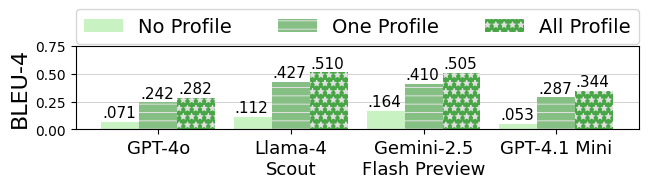
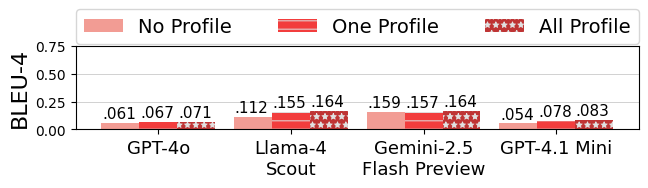
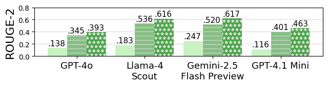
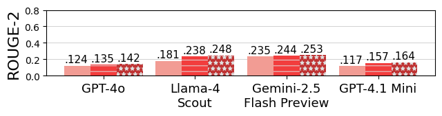
When profile figures shared the same type as the target figure, personalization works better.
The SciCap Challenge dataset provided figure types (e.g., graph plot, scatterplot), allowing us to examine how figure types affect personalized caption generation. We focused on cases where a target figure had only one profile figure, dividing them into two groups: those where the profile figure type matched the target figure (Yes) and those where it did not (No). Table 2 shows that captions were closer to the ground-truths when the profile figure shared the same type as the target figure.
Personalization is more effective when profile captions are highly similar to the target caption.
Inspired by the figure type study (Table 2), we investigated whether profile captions similar to the target caption improve personalization. For each target figure in the test set, we calculated the semantic similarity using BERTScore Zhang et al. (2020) and lexical similarity using ROUGE-L Lin (2004) between profile captions and the target caption. (Appendix F shows detailed score distributions.) We then sorted the test set by the highest similarity score for each target figure and selected the top 25% of data points with high similarity in both metrics, creating the Context-Aligned set with 2,513 target figures. The remaining 9,690 target figures in the test set formed the Context-Misaligned set. Figure 2 shows that personalization is more effective when at least one profile caption is highly similar to the ground-truth caption (Figures 2a-1 and 2a-2). While profiles still help in the Context-Misaligned set (Figures 2b-1 and 2b-2), their impact is noticeably smaller. The detailed results can be found in Appendix F.
4.1 Ablation Study
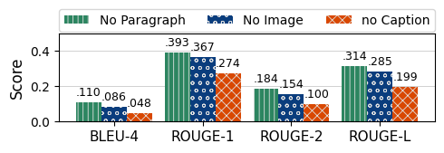
Captions are the most important profile element, while images are more influential than paragraphs.
To assess the importance of each profile element, we conducted an ablation study on the test set using the GPT-4o model with the One Profile setting. We tested three conditions by removing one profile element at a time: (i) figure captions (No Caption), (ii) figure images (No Image), and (iii) figure-mentioning paragraphs (No Paragraph). Figure 3 shows the results. Removing captions had the most significant impact, as captions directly guide generation. Removing images also reduced performance more than removing paragraphs, highlighting the greater influence of visual information. Appendix G shows the detailed results.
5 Discussion
Our results with \datasetshow that including visual elements (figure images) in profiles enhances personalized caption generation, with more profile information further improving performance. While our study focused only on personalized text generation, Zhang et al. highlighted deep connections between LLM-based personalized text generation and downstream applications like recommendation systems, suggesting that multimodal profiles could benefit tasks beyond text generation, including multimodal recommendation. Our findings also echo challenges noted by Zhang et al., such as reduced LLM effectiveness when profiles lack similarity—a problem linked to cold-start scenarios in low-resource settings. We hope our results encourage the research community to explore multimodal profiles for broader LLM personalization.
6 Conclusion and Future Work
We introduced \dataset, a new dataset for personalized caption generation for scientific figures using multimodal profiles, and showed that profiles make captions more personalized across four language models. Future work includes expanding profile components, exploring cross-domain generalization, and conducting human evaluations. We are also developing a caption writing assistant that generates personalized captions by analyzing users’ own document context.
7 Limitations
We acknowledge several limitations in this work.
-
•
First, our approach assumes that each figure has profile figures from the same arXiv paper, but this is not always true, especially for papers with only one figure, which we excluded. This assumption also limits practical use in early-stage paper writing, where context for personalization may be sparse.
-
•
Second, we did not include individual author information in personalization profiles because most papers are co-authored, and different figures and captions may be written by different authors. Although author-based personalization could be explored using their past works, the collaborative nature of academic writing makes this difficult.
-
•
Third, despite using a smaller LLM (GPT-4.1 Mini) to reduce data contamination risks, the use of published data (SciCap Challenge dataset) means some risk remains.
-
•
Finally, our evaluation focused on caption similarity to original captions, which does not guarantee caption quality. High similarity suggests profiles capture context and style, but it does not ensure the captions are useful for readers. Future work should include human evaluation to assess caption quality and usefulness.
8 Ethics Statements
Using LLMs to generate text inherently carries risks, including producing inaccurate or misleading information. In scholarly contexts, such errors could mislead readers. Our approach minimizes this risk by involving paper authors, who should review and revise generated captions. If captions are presented to readers without human validation—contrary to our intent—the system should clearly indicate that the captions are AI-generated, not written by the original authors.
Acknowledgments
We thank the Alfred P. Sloan Foundation for its generous support of this research (Grant Number: 2024-22721).
References
- Anantha Ramakrishnan et al. (2025) Aashish Anantha Ramakrishnan, Aadarsh Anantha Ramakrishnan, and Dongwon Lee. 2025. RONA: Pragmatically diverse image captioning with coherence relations. In Proceedings of the Fourth Workshop on Intelligent and Interactive Writing Assistants (In2Writing 2025), pages 74–86. Association for Computational Linguistics.
- Chen et al. (2020) Charles Chen, Ruiyi Zhang, Eunyee Koh, Sungchul Kim, Scott Cohen, and Ryan Rossi. 2020. Figure captioning with relation maps for reasoning. In Proceedings of the IEEE/CVF Winter Conference on Applications of Computer Vision, pages 1537–1545.
- DeepMind (2024) Google DeepMind. 2024. Gemini 2.5 flash preview. https://deepmind.google/technologies/gemini/. Large language model preview by Google.
- Farahani et al. (2023) Ali Mazraeh Farahani, Peyman Adibi, Mohammad Saeed Ehsani, Hans-Peter Hutter, and Alireza Darvishy. 2023. Automatic chart understanding: a review. IEEE Access, 11:76202–76221.
- Hsu et al. (2021) Ting-Yao Hsu, C Lee Giles, and Ting-Hao Huang. 2021. SciCap: Generating captions for scientific figures. In Findings of the Association for Computational Linguistics: EMNLP 2021, pages 3258–3264, Punta Cana, Dominican Republic. Association for Computational Linguistics.
- Hsu et al. (2024) Ting-Yao Hsu, Chieh-Yang Huang, Shih-Hong Huang, Ryan Rossi, Sungchul Kim, Tong Yu, C Lee Giles, and Ting-Hao Kenneth Huang. 2024. Scicapenter: Supporting caption composition for scientific figures with machine-generated captions and ratings. In Extended Abstracts of the CHI Conference on Human Factors in Computing Systems, CHI EA ’24, New York, NY, USA. Association for Computing Machinery.
- Hsu et al. (2025) Ting-Yao E Hsu, Yi-Li Hsu, Shaurya Rohatgi, Chieh-Yang Huang, Ho Yin Sam Ng, Ryan Rossi, Sungchul Kim, Tong Yu, Lun-Wei Ku, C Lee Giles, and 1 others. 2025. Do large multimodal models solve caption generation for scientific figures? lessons learned from scicap challenge 2023. arXiv preprint arXiv:2501.19353.
- Hu et al. (2024) Anwen Hu, Yaya Shi, Haiyang Xu, Jiabo Ye, Qinghao Ye, Ming Yan, Chenliang Li, Qi Qian, Ji Zhang, and Fei Huang. 2024. mplug-paperowl: Scientific diagram analysis with the multimodal large language model. In Proceedings of the 32nd ACM International Conference on Multimedia, pages 6929–6938.
- Huang et al. (2023) Chieh-Yang Huang, Ting-Yao Hsu, Ryan Rossi, Ani Nenkova, Sungchul Kim, Gromit Yeuk-Yin Chan, Eunyee Koh, C Lee Giles, and Ting-Hao Huang. 2023. Summaries as captions: Generating figure captions for scientific documents with automated text summarization. In Proceedings of the 16th International Natural Language Generation Conference, pages 80–92, Prague, Czechia. Association for Computational Linguistics.
- Hurst et al. (2024) Aaron Hurst, Adam Lerer, Adam P Goucher, Adam Perelman, Aditya Ramesh, Aidan Clark, AJ Ostrow, Akila Welihinda, Alan Hayes, Alec Radford, and 1 others. 2024. Gpt-4o system card. arXiv preprint arXiv:2410.21276.
- Kantharaj et al. (2022a) Shankar Kantharaj, Rixie Tiffany Leong, Xiang Lin, Ahmed Masry, Megh Thakkar, Enamul Hoque, and Shafiq Joty. 2022a. Chart-to-text: A large-scale benchmark for chart summarization. In Proceedings of the 60th Annual Meeting of the Association for Computational Linguistics (Volume 1: Long Papers), pages 4005–4023.
- Kantharaj et al. (2022b) Shankar Kantharaj, Rixie Tiffany Leong, Xiang Lin, Ahmed Masry, Megh Thakkar, Enamul Hoque, and Shafiq Joty. 2022b. Chart-to-text: A large-scale benchmark for chart summarization. In Proceedings of the 60th Annual Meeting of the Association for Computational Linguistics (Volume 1: Long Papers), pages 4005–4023, Dublin, Ireland. Association for Computational Linguistics.
- Kim et al. (2021) Dae Hyun Kim, Vidya Setlur, and Maneesh Agrawala. 2021. Towards understanding how readers integrate charts and captions: A case study with line charts. In Proceedings of the 2021 CHI Conference on Human Factors in Computing Systems, pages 1–11.
- Kim et al. (2025) Jaeyoung Kim, Jongho Lee, Hong-Jun Choi, Ting-Yao Hsu, Chieh-Yang Huang, Sungchul Kim, Ryan Rossi, Tong Yu, Clyde Lee Giles, Ting-Hao’Kenneth’ Huang, and 1 others. 2025. Multi-llm collaborative caption generation in scientific documents. arXiv preprint arXiv:2501.02552.
- Kumar et al. (2024) Ishita Kumar, Snigdha Viswanathan, Sushrita Yerra, Alireza Salemi, Ryan A Rossi, Franck Dernoncourt, Hanieh Deilamsalehy, Xiang Chen, Ruiyi Zhang, Shubham Agarwal, and 1 others. 2024. Longlamp: A benchmark for personalized long-form text generation. arXiv preprint arXiv:2407.11016.
- Lin (2004) Chin-Yew Lin. 2004. ROUGE: A package for automatic evaluation of summaries. In Text Summarization Branches Out, pages 74–81, Barcelona, Spain. Association for Computational Linguistics.
- Liu et al. (2022) Fangyu Liu, Francesco Piccinno, Syrine Krichene, Chenxi Pang, Kenton Lee, Mandar Joshi, Yasemin Altun, Nigel Collier, and Julian Martin Eisenschlos. 2022. Matcha: Enhancing visual language pretraining with math reasoning and chart derendering. arXiv preprint arXiv:2212.09662.
- Masry et al. (2023) Ahmed Masry, Parsa Kavehzadeh, Xuan Long Do, Enamul Hoque, and Shafiq Joty. 2023. Unichart: A universal vision-language pretrained model for chart comprehension and reasoning. arXiv preprint arXiv:2305.14761.
- Meng et al. (2024) Fanqing Meng, Wenqi Shao, Quanfeng Lu, Peng Gao, Kaipeng Zhang, Yu Qiao, and Ping Luo. 2024. Chartassisstant: A universal chart multimodal language model via chart-to-table pre-training and multitask instruction tuning. arXiv preprint arXiv:2401.02384.
- MetaAI (2025) MetaAI. 2025. The llama 4 herd: The beginning of a new era of natively multimodal ai innovation. https://ai.meta.com/blog/llama-4-multimodal-intelligence/. Accessed: May 2025.
- Ng et al. (2025a) Ho Yin Sam Ng, Ting-Yao Hsu, Jiyoo Min, Sungchul Kim, Ryan A Rossi, Tong Yu, Hyunggu Jung, and Ting-Hao Huang. 2025a. Understanding writing assistants for scientific figure captions: A thematic analysis. In Proceedings of the Fourth Workshop on Intelligent and Interactive Writing Assistants (In2Writing 2025), pages 1–10.
- Ng et al. (2025b) Ho Yin Sam Ng, Ting-Yao Hsu, Jiyoo Min, Sungchul Kim, Ryan A Rossi, Tong Yu, Hyunggu Jung, and Ting-Hao Kenneth Huang. 2025b. Understanding how paper writers use ai-generated captions in figure caption writing. In 2nd AI4Research Workshop: Towards a Knowledge-grounded Scientific Research Lifecycle.
- Obeid and Hoque (2020) Jason Obeid and Enamul Hoque. 2020. Chart-to-text: Generating natural language descriptions for charts by adapting the transformer model. In Proceedings of the 13th International Conference on Natural Language Generation, pages 138–147, Dublin, Ireland. Association for Computational Linguistics.
- OpenAI (2024) OpenAI. 2024. Gpt-4.1 mini. https://openai.com/index/gpt-4-1/. Large language model.
- Salemi et al. (2024) Alireza Salemi, Sheshera Mysore, Michael Bendersky, and Hamed Zamani. 2024. LaMP: When large language models meet personalization. In Proceedings of the 62nd Annual Meeting of the Association for Computational Linguistics (Volume 1: Long Papers), pages 7370–7392, Bangkok, Thailand. Association for Computational Linguistics.
- Shuster et al. (2019) Kurt Shuster, Samuel Humeau, Hexiang Hu, Antoine Bordes, and Jason Weston. 2019. Engaging image captioning via personality. In 2019 IEEE/CVF Conference on Computer Vision and Pattern Recognition (CVPR), pages 12508–12518. IEEE.
- Stokes et al. (2022) Chase Stokes, Vidya Setlur, Bridget Cogley, Arvind Satyanarayan, and Marti A Hearst. 2022. Striking a balance: Reader takeaways and preferences when integrating text and charts. IEEE Transactions on Visualization and Computer Graphics, 29(1):1233–1243.
- Tan et al. (2024) Zhaoxuan Tan, Qingkai Zeng, Yijun Tian, Zheyuan Liu, Bing Yin, and Meng Jiang. 2024. Democratizing large language models via personalized parameter-efficient fine-tuning. In Proceedings of the 2024 Conference on Empirical Methods in Natural Language Processing, pages 6476–6491.
- Tang et al. (2023) Benny J Tang, Angie Boggust, and Arvind Satyanarayan. 2023. Vistext: A benchmark for semantically rich chart captioning. arXiv preprint arXiv:2307.05356.
- Wang et al. (2024) Zirui Wang, Mengzhou Xia, Luxi He, Howard Chen, Yitao Liu, Richard Zhu, Kaiqu Liang, Xindi Wu, Haotian Liu, Sadhika Malladi, and 1 others. 2024. Charxiv: Charting gaps in realistic chart understanding in multimodal llms. Advances in Neural Information Processing Systems, 37:113569–113697.
- Woźniak et al. (2024) Stanisław Woźniak, Bartłomiej Koptyra, Arkadiusz Janz, Przemysław Kazienko, and Jan Kocoń. 2024. Personalized large language models. arXiv preprint arXiv:2402.09269.
- Yang et al. (2024) Zhishen Yang, Raj Dabre, Hideki Tanaka, and Naoaki Okazaki. 2024. Scicap+: A knowledge augmented dataset to study the challenges of scientific figure captioning. Journal of Natural Language Processing, 31(3):1140–1165.
- Zhang et al. (2020) Tianyi Zhang, Varsha Kishore, Felix Wu, Kilian Q Weinberger, and Yoav Artzi. 2020. BERTScore: Evaluating text generation with BERT. In International Conference on Learning Representations.
- Zhang et al. (2024) Zhehao Zhang, Ryan A Rossi, Branislav Kveton, Yijia Shao, Diyi Yang, Hamed Zamani, Franck Dernoncourt, Joe Barrow, Tong Yu, Sungchul Kim, and 1 others. 2024. Personalization of large language models: A survey. arXiv preprint arXiv:2411.00027.
Appendix A \datasetDataset Details
Figure 4 provides a detailed breakdown of figure type across each data split. Figure 5 provides a detailed distribution across each data split.
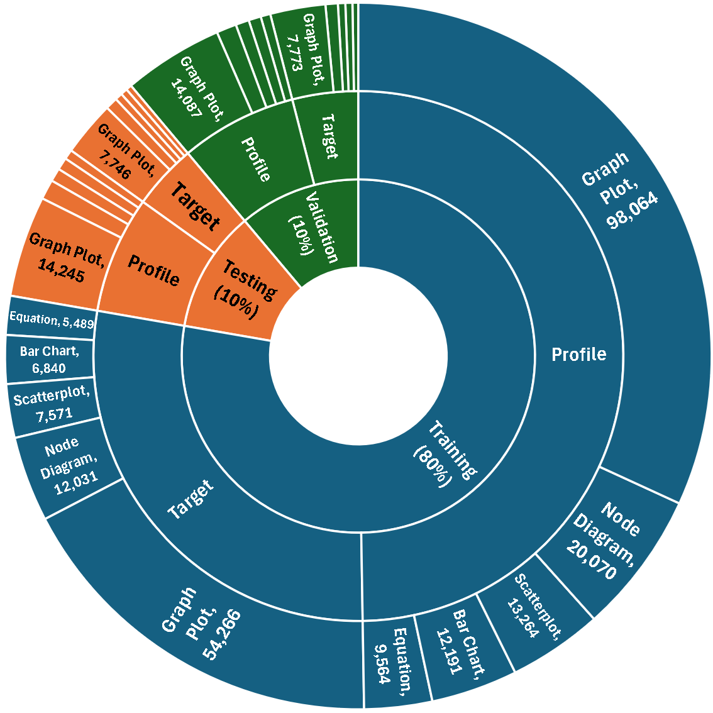
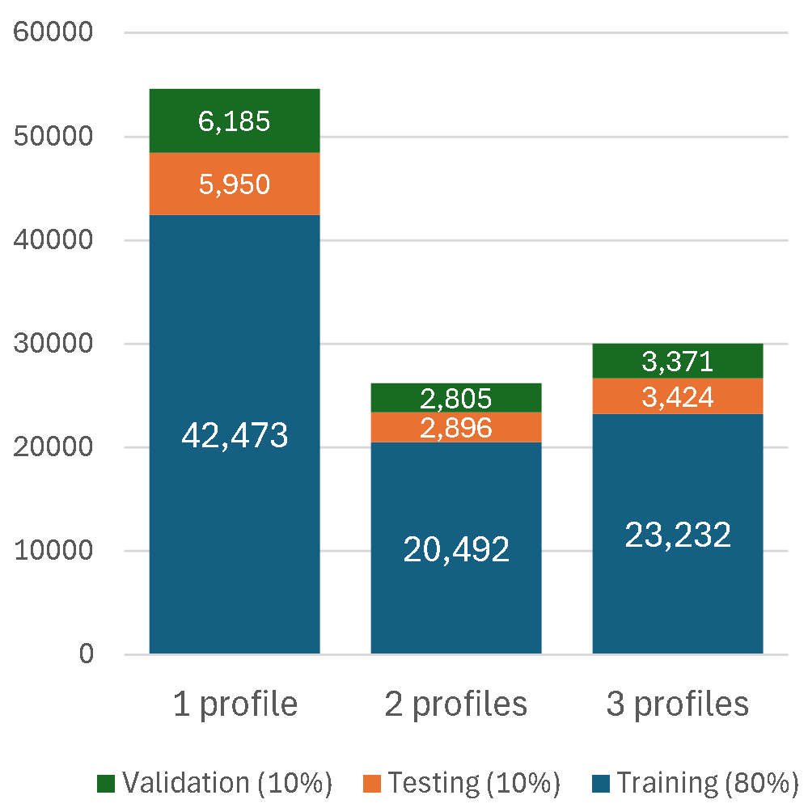
Appendix B Prompts
In this section, we provide the prompt we used in Section 4. [IMG-TARGET] and [PARA-TARGET] represent encoded images and figure-mentioning paragraphs from target figures. [num_profiles] indicates the number of profiles used, while [profile_index] denotes a specific profile’s index. [IMG-PROFILE], [PARA-PROFILE], and [CAP-PROFILE] correspond to encoded images, figure-mentioning paragraphs, and captions from profile figures, respectively.
Prompt with No Profile.
The following prompt was used for the baseline condition without profile information:
Prompt with Profile.
The following prompt was used with profile information:
Appendix C Generation Output Cleaning Procedure
We performed data output cleaning in three steps.
-
1.
We manually examined cases with BLEU or ROUGE scores of 0 to identify data issues. We identified 11 cases (out of 12,270) where the original captions were incorrectly captured due to parsing errors—either missing the real caption content or capturing the wrong text. In one instance, the parser mistakenly captured the paper authors name from the bottom-right corner instead of the caption beneath the figure on the same page. These cases were excluded from evaluation.
-
2.
We used GPT-4o-mini to clean the generated captions, removing irrelevant text such as reasoning steps, figure indexes, or any pre- and suffix that did not belong to the actual caption. Our cleaning instructions explicitly specified not to add any additional text or explanations to the raw output. The following prompt was used:
You are a helpful assistant that extracts the actual caption from text. Ignore any reasoning or explanation text and only return the actual caption content. Also, remove any prefix that indicates figure index such as ’Caption:’, ’Fig.’, ’Figure’, or any numbering before the main caption text. Extract ONLY the actual caption from this text, without any additional text or explanation: [GENERATED-CAPTION]Below is an example from arXiv paper 1105.0392, showing the response from the "Llama-4 Scout" model with "All Profile" configuration, before and after cleaning:
RAW OUTPUT
The following is the raw output before cleaning:
Based on the provided elements, I will generate a caption for the Target Figure. Target Figure Caption: A deterministic algorithm for the 1-dimensional case chooses a good sensor at each step. This caption maintains the same writing style as Caption 1: "Four similar rhombi form a set of regions for which no stateless algorithm can be competitive." It is concise, informative, and provides a brief description of the Target Figure. The tone and structure of the caption are consistent with the provided caption, and it effectively conveys the main idea of the Target Figure. Please let me know if you need further adjustments!
EXTRACTED CAPTION
The following is the extracted caption after cleaning:
A deterministic algorithm for the 1-dimensional case chooses a good sensor at each step.
After GPT-4o cleaning, we randomly sampled 100 outputs for human evaluation. Using binary labels (GOOD/BAD), we assessed whether the extracted captions were correct. All 100 sampled extractions were labeled as GOOD, confirming the cleaning procedure’s effectiveness.
-
3.
We employed keyword filtering with manual verification to filtered out failed generation, including blank responses. Detailed examples of these error cases are documented in Table 3. After cleaning, we identified a total of 56 unique problematic cases across all models and configurations (out of 12,259), which were excluded from further analysis.
| Model and Config | Cases | Examples of Invalid Generations |
|---|---|---|
| Gemini-No_Profile | 24 | "The provided paragraphs do not mention the Target Figure." |
| "nan", "None" | ||
| "Sorry, I lack the necessary information to generate a caption…" | ||
| "Please provide the Target Figure Image and the Target Figure Paragraph(s)…" | ||
| "no caption found" | ||
| "we are unable to generate a caption for this figure…" | ||
| Gemini-One_Profile | 9 | "image 1", "Target Figure Image" |
| "there is no caption to extract" | ||
| Gemini-All_Profile | 9 | "image 1", "image" |
| Llama-No_Profile | 6 | "There is no caption provided in the text." |
| Llama-One_Profile | 8 | "target", "target figure" |
| "There is no caption provided in the text." | ||
| "Since the Target Figure Image does not contain any specific data or information…" | ||
| Llama-All_Profile | 4 | "target", "target figure" |
| "not applicable" | ||
| 4.1 Mini-One_Profile | 1 | "no caption provided" |
Appendix D Text Preprocessing and Evaluation
For text normalization before evaluation, we implemented a custom preprocessing pipeline using standard Python libraries that: (1) converts text to lowercase, (2) removes all punctuation, and (3) normalizes whitespace.
For evaluation, we used standard NLP metrics implemented in Python packages: NLTK (version 3.9.1) for BLEU scores (with SmoothingFunction for smoothing) and Google’s rouge_scorer (version 0.1.2) for ROUGE metrics. We used the default parameters for both packages. The specific implementations were imported directly from nltk.translate.bleu_score and rouge_score modules.
Appendix E Detail about Caption Evaluation
This appendix session is to supplement the result in Section 4 regarding the main study of caption generation using different profile configuration across 4 models.
Figure 7 shows the BLEU-4 distribution across different language models and profile configurations.
Figure 8 shows the ROUGE-2 distribution across different language models and profile configurations.
Appendix F Context-Alignment Data Partition
This appendix provides additional details on the Context-Aligned and Context-Misaligned subset partitioning and evaluation described in Section 4.
Figure 6 presents the distribution of BERTScore and ROUGE-L between target and profile captions in the \dataset Test Set.
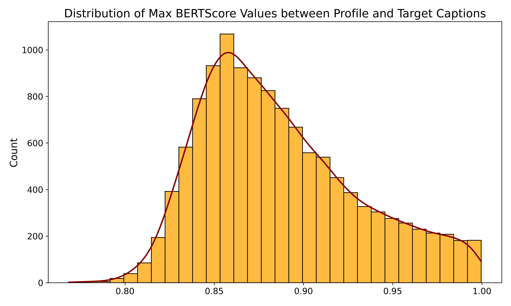
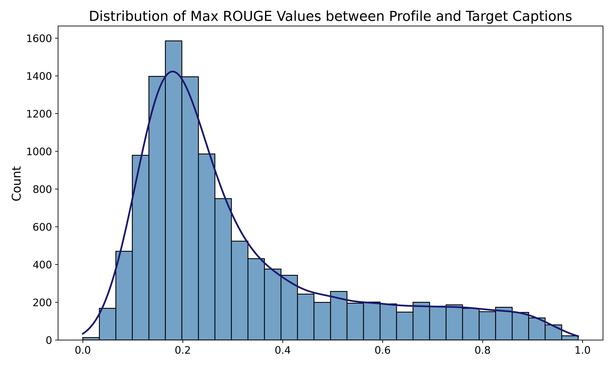
Table 4 shows performance metrics for the Context-Aligned Subset across different LLMs and profile configurations.
| LLM | Profile | BLEU | ROUGE | |||||||
|---|---|---|---|---|---|---|---|---|---|---|
| Used | B-1 | B-2 | B-3 | B-4 | R-1 | R-2 | R-L | |||
| GPT-4o | No | .226 | .144 | .101 | .071 | .321 | .138 | .259 | ||
| One | .437 | .347 | .289 | .242 | .533 | .345 | .484 | |||
| All | .478 | .391 | .332 | .282 | .573 | .393 | .530 | |||
| Llama-4 Scout | No | .249 | .178 | .139 | .112 | .347 | .183 | .296 | ||
| One | .589 | .523 | .473 | .427 | .676 | .536 | .646 | |||
| All | .666 | .605 | .556 | .510 | .744 | .616 | .720 | |||
|
No | .319 | .241 | .195 | .164 | .459 | .247 | .379 | ||
| One | .576 | .507 | .456 | .410 | .664 | .520 | .635 | |||
| All | .659 | .600 | .551 | .505 | .742 | .617 | .717 | |||
| GPT-4.1 Mini | No | .188 | .116 | .078 | .053 | .282 | .116 | .220 | ||
| One | .449 | .379 | .330 | .287 | .554 | .401 | .511 | |||
| All | .496 | .433 | .387 | .344 | .600 | .463 | .565 | |||
Table 5 presents performance metrics for the Context-Misaligned Subset across different LLMs and profile configurations.
| LLM | Profile | BLEU | ROUGE | |||||||
|---|---|---|---|---|---|---|---|---|---|---|
| Used | B-1 | B-2 | B-3 | B-4 | R-1 | R-2 | R-L | |||
| GPT-4o | No | .217 | .131 | .088 | .061 | .320 | .124 | .245 | ||
| One | .238 | .144 | .097 | .067 | .345 | .135 | .269 | |||
| All | .244 | .150 | .102 | .071 | .351 | .142 | .275 | |||
| Llama-4 Scout | No | .255 | .178 | .138 | .112 | .360 | .181 | .292 | ||
| One | .316 | .233 | .187 | .155 | .430 | .238 | .366 | |||
| All | .326 | .243 | .196 | .164 | .440 | .248 | .376 | |||
|
No | .301 | .227 | .186 | .159 | .414 | .235 | .357 | ||
| One | .317 | .235 | .189 | .157 | .434 | .244 | .371 | |||
| All | .326 | .244 | .197 | .164 | .443 | .253 | .380 | |||
| GPT-4.1 Mini | No | .215 | .127 | .082 | .054 | .312 | .117 | .226 | ||
| One | .243 | .156 | .109 | .078 | .357 | .157 | .278 | |||
| All | .249 | .162 | .114 | .083 | .364 | .164 | .284 | |||
Appendix G Detailed Result of Ablation Study
This appendix session is to supplement the finding in subsection 4.1 regarding the ablation study. Table 6 shows the detailed result of ablation study.
| Elements | BLEU | ROUGE | |||||
|---|---|---|---|---|---|---|---|
| B-1 | B-2 | B-3 | B-4 | R-1 | R-2 | R-L | |
| No Paragraph | .299 | .199 | .146 | .110 | .393 | .184 | .314 |
| No Image | .273 | .171 | .119 | .086 | .367 | .154 | .285 |
| No Caption | .189 | .109 | .071 | .048 | .274 | .100 | .199 |
Appendix H Disclosure of AI Assistance
We used Perplexity to facilitate proofreading and text refinement.
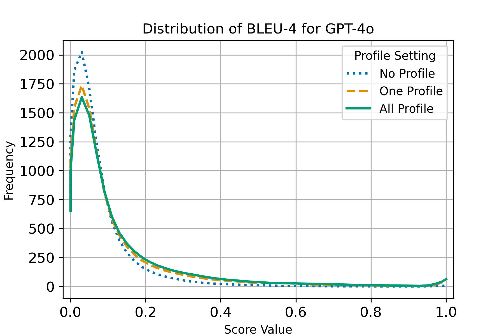
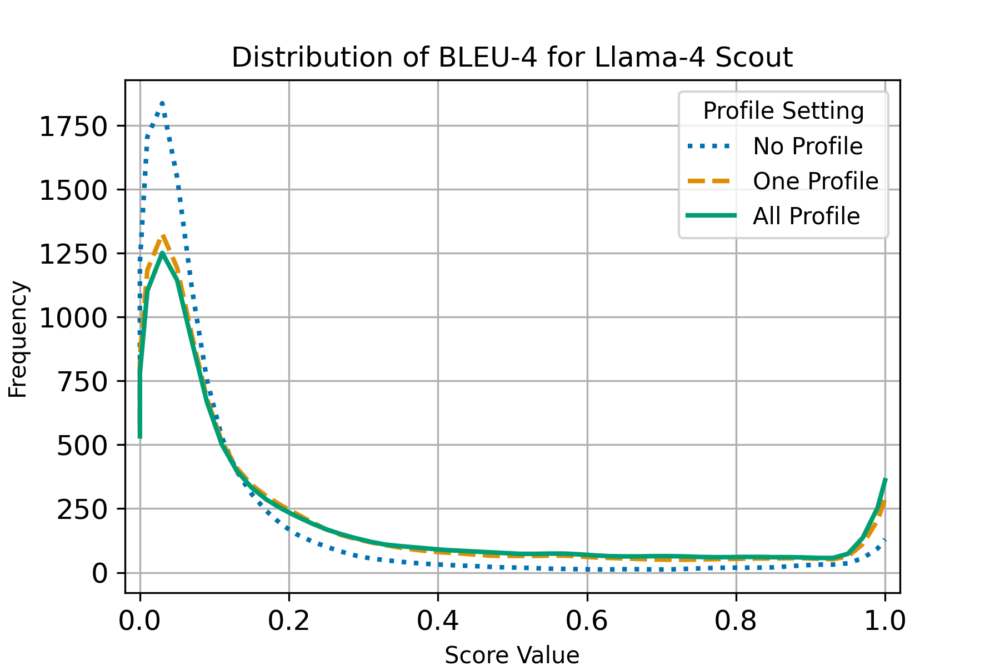
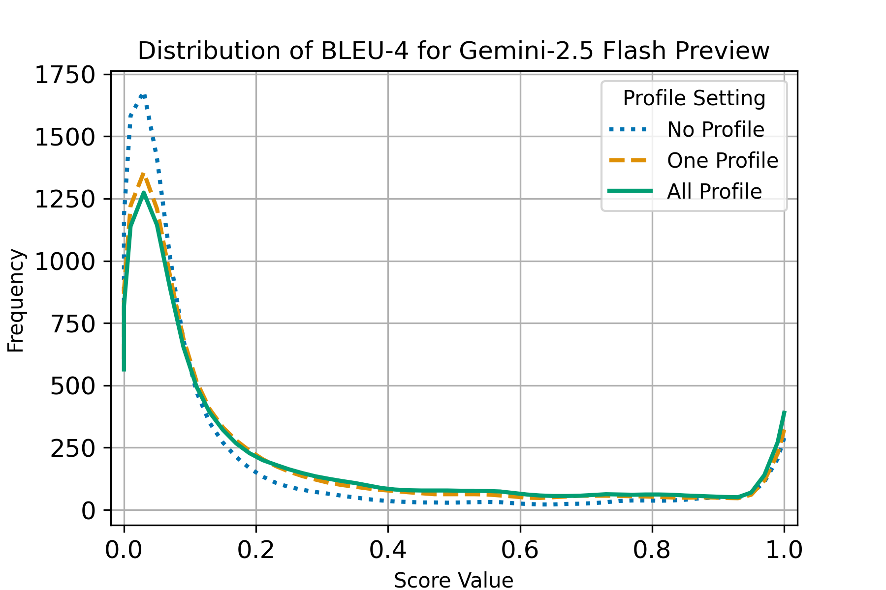
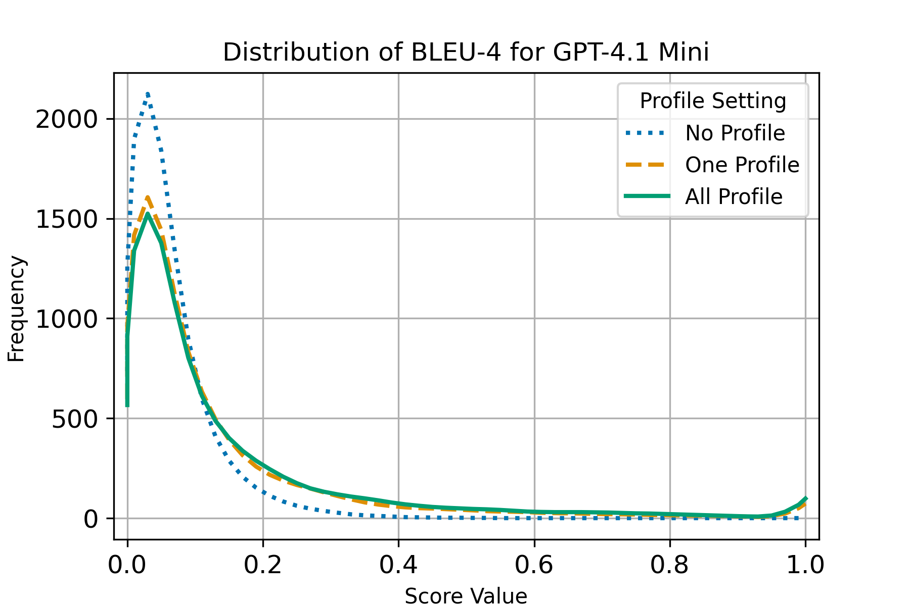
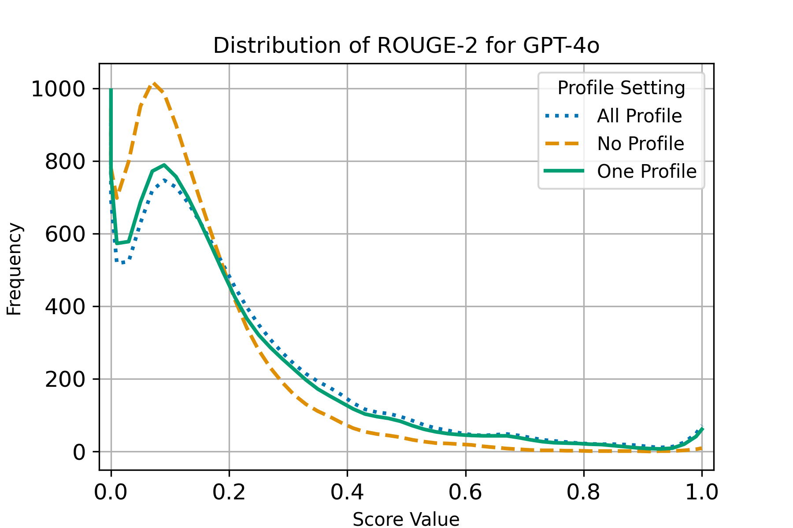
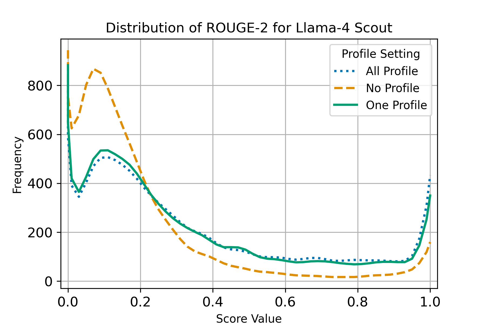
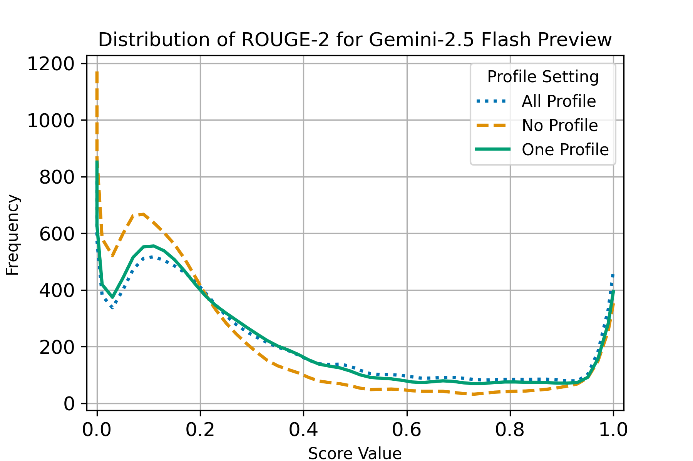
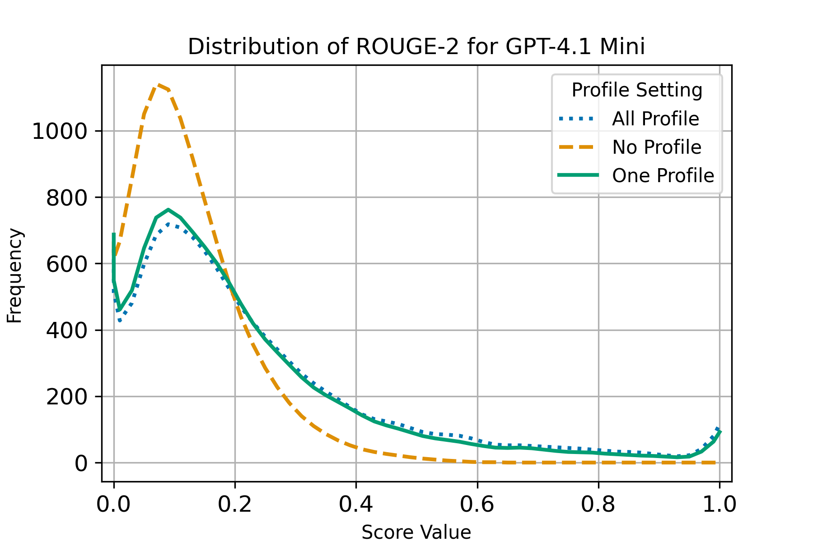